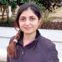

Director
Dr. Rasheed, Khaled
Position:- Associate Professor in the Department of Computer Science
- Graduate coordinator of the UGA Institute for Artificial Intelligence
- Member of the UGA Institute of Bioinformatics
- UGA Faculty of Engineering
- Genetic Algorithms
- Evolutionary Computation
- Machine Learning
- Engineering Design Optimization
- Computational Biology
Current Ph.D Students
Basharat, Amna
Research Interest:- Evolutionary Computation
- Machine Learning
- Text Mining and Classification
- Semantic Web and Linked Open Data
- Crowdsourcing
- Knowledge Modelling and Classification of Quran and Hadith Corpus
LaMarca, Sal
- Evolutionary Computation
- Machine Learning
- Bioinformatics
- Database Systems
- Numerical Analysis
- GWAS (Genome-Wide Association Studies)
- Detection of long non-coding RNAs
Current Master Students
Dewan, Akul
- Machine Learning
- Short Text Classification of Clinical Questions

Jalazadehfard, Faranak
- Data Mining
- Social Network
Jindal, Shubham
- Machine Learning
- Natural Language Processing
- Computational Intelligence
- Short Text Classification of Clinical Questions
Kannan Ambili, Aardra
- Machine Learning
- Natural Language Processing
-
Development of an automated scorer for measuring Conceptual /Integrative complexity in English Text using Machine Learning techniques. Currently developing features for the text mining problem through statistical modeling of natural language.
Wang, Haosha (Elsa)
-
My research interests are Machine Learning, Decision Making. And I'm a Computational Creativity Enthusiast.
- Artificial Intelligence Stylist in clothing fashion